El dossier de la formación presencial en Técnica Divine: el sistema linfático, el protocolo de trabajo y las contraindicaciones.
Quién está detrás del método, qué es la Técnica Divine y qué aporta incorporarla a un centro. Cierra el apartado la Técnica Divine Facial, la aplicación del método en el rostro.
En el mundo de la estética avanzada, pocos nombres resuenan con tanta distinción y autoridad como el de Sorela Caro. Con más de tres décadas de trayectoria, se ha consolidado como una líder indiscutible en el sector, marcando pautas de innovación y calidad en el cuidado de la belleza y el bienestar personal.
Desde sus inicios, ha sabido unir el arte con la ciencia en cada tratamiento, elevando el estándar de lo que significa realmente cuidar el cuerpo y el alma.
Fruto de esa experiencia y visión nace la Técnica Divine, un método exclusivo de drenaje y modelado corporal que ha transformado la manera de entender la estética. Divine no es solo una técnica: es una experiencia sensorial, emocional y profundamente personalizada, diseñada para quienes buscan algo más que resultados: buscan excelencia.
Su exclusividad se refleja en tres pilares fundamentales:
Incorporar la Técnica Divine a tu empresa es apostar por un servicio de lujo con alma; es ofrecer a tus clientes una experiencia que no solo los embellece, sino que los reconecta con su bienestar más profundo.
Porque lo Divine no se improvisa: se siente, se vive y se recuerda.
Este curso nace con la intención de transmitir la riqueza de conocimientos, experiencia y sensibilidad de Sorela Caro a una nueva generación de profesionales de la estética. Su propósito es claro: que su legado de excelencia, innovación y profundo respeto por el cuerpo humano continúe transformando vidas, dentro y fuera del espacio terapéutico.
A lo largo de su trayectoria, Sorela ha dedicado su vida a desarrollar soluciones estéticas que no solo embellecen, sino que también brindan alivio emocional, ayudando a las personas a sentirse más a gusto en su propio cuerpo. Su mirada va más allá de lo superficial: entiende la estética como una herramienta de bienestar integral.
A través de su práctica y su enseñanza, promueve un enfoque holístico de la belleza, donde la estética avanzada se entrelaza con el cuidado personal profundo.
Cada técnica, cada gesto y cada protocolo están pensados para acompañar al cliente en un proceso de transformación real, ayudándolo a reconectar con la mejor versión de sí mismo.
Los medios de comunicación nos destacan como la técnica del futuro.
El desarrollo de la Técnica Divine Sorela Caro, basado en un profundo conocimiento de la anatomía humana, ha hecho que estos masajes sean considerados de lo más asombrosos por sus magníficos resultados desde la primera sesión.
El masaje facial de la Técnica Divine es ideal para restablecer el equilibrio psicofísico, siendo muy beneficioso en periodos de alto estrés y eficaz tanto a nivel terapéutico como preventivo. Recomendamos recibir este tratamiento cada vez que te sientas exhausto y cuando tu cuerpo y alma necesiten recuperar estabilidad y equilibrio.
La generación de nueva linfa fortalece el sistema inmunológico y mejora significativamente la respiración, gracias a las técnicas específicas de la Técnica Divine Sorela Caro, que también ayudan a despejar los conductos nasales.
A largo plazo, el masaje facial de la Técnica Divine es igualmente efectivo: al trabajar sobre las tensiones y el estrés, facilita enfrentar los desafíos diarios con mayor serenidad y ayuda a prevenir la acumulación de fatiga.
La Técnica Divine Facial es una innovación fruto de incontables horas de estudio y dedicación. Consiste en la remodelación del óvalo facial, la oxigenación de los tejidos y la atenuación de las arrugas. Tras apenas una sesión, notarás un rostro visiblemente más joven y revitalizado.
¡Pero eso no es todo! Las especiales maniobras manuales promueven la eliminación del exceso de líquidos y estimulan la producción de nueva linfa.
La formación se desarrolla en dos jornadas completas, con teoría, turno de preguntas y práctica sobre modelo cada día. Este es el desarrollo hora por hora.
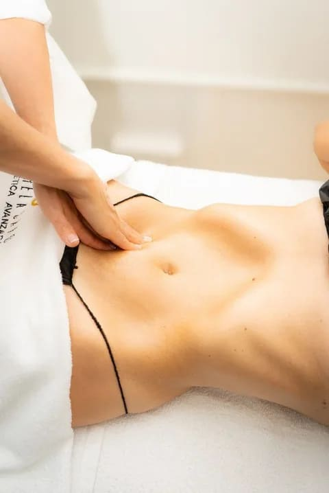
Nos congregaremos el primer día de curso a primera hora, a las 8:30 h, para realizar el proceso de inscripción. Acto seguido, daremos inicio a la parte teórica alrededor de las 9:00 h y la continuaremos hasta las 11:00 h. En este primer día, nos centraremos en la técnica de drenaje y desbloqueo.
Al finalizar, se abrirá un momento para preguntas y respuestas, aspecto fundamental para el correcto aprendizaje de la técnica. A continuación, haremos una pausa para el almuerzo, hasta las 14:00 h, momento en el que nos reincorporaremos al curso.
Posteriormente, avanzaremos directamente a la aplicación práctica con el primer modelo que facilitaremos. Esta sesión práctica se centrará en el abdomen y las piernas.
Lo ideal es realizar la práctica entre alumnas, ya que es sumamente importante sentir para saber transmitir. Sin embargo, ten en cuenta que la estrategia es tratar a cada individuo de manera personalizada, dado que cada persona es única y su respuesta a una misma presión o maniobra puede variar según su sensibilidad personal, que seguramente será distinta a la de otras personas.
Finalizaremos el trabajo con el primer modelo aproximadamente a las 16:00 h. Continuaremos sin demora con el segundo modelo del día, perfeccionando las técnicas revisadas durante la jornada, y finalizaremos a las 18:00 h.
Se mostrarán todas las maniobras en una pantalla grande y contaremos con la asistencia directa de Sorela Caro.
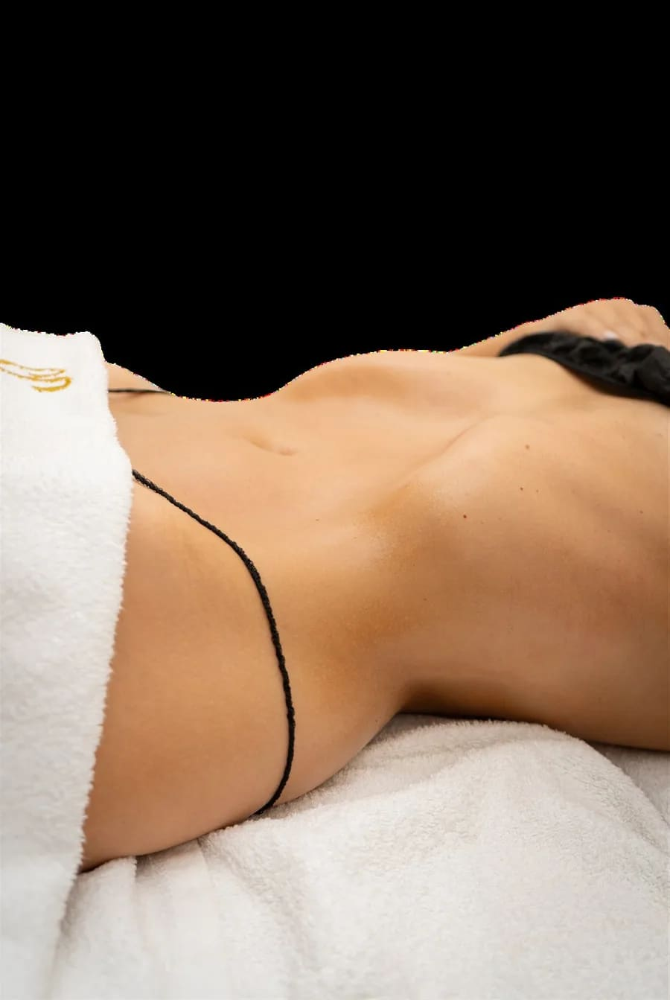
El segundo día comenzaremos a las 8:30 h con un espacio de 30 minutos para resolver posibles dudas, hasta las 9:00 h. Entonces daremos inicio a la segunda jornada del curso, en la que nos centraremos en la técnica moldeadora.
Repasaremos en conjunto todos los aspectos del protocolo para asegurarnos de estar completamente preparados para profundizar en la esencia del curso.
La parte teórica y práctica de la Técnica Divine se llevará a cabo con una modelo; comenzaremos a las 10:00 h y, al finalizar, habrá un snack. Daremos paso al segundo modelo y finalizaremos esta sección hacia las 15:00 h.
La tarde de esta segunda jornada estará dedicada al tratamiento facial y comenzará a las 16:00 h. Se introducirá brevemente la teoría. Después, aplicaremos directamente la Técnica Divine en el modelo facial y concluiremos la jornada a las 19:30 h.
El 90 % de la teoría del tratamiento facial se habrá tratado ya a lo largo de las dos jornadas de formación, de modo que en esta sesión solo se introduce brevemente.
Entrega de diplomas de terapeuta Divine.
Antes de entrar en la práctica del DLM Divine conviene entender sobre qué se trabaja: qué es el masaje drenante Técnica Divine, cómo está organizado el sistema linfático, qué es la linfa, de qué está hecha y qué funciones cumple en el cuerpo.
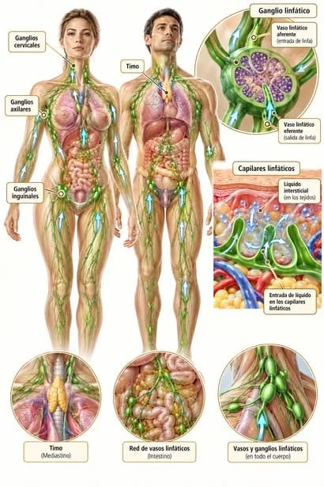
El masaje linfático es una técnica específica que influye positivamente en el sistema linfático del cuerpo. Comúnmente se le conoce como masaje drenante, y este término se utiliza de manera amplia para describir diversos tipos de masajes que estimulan y mejoran la circulación linfática, ayudando a eliminar el exceso de líquidos acumulados.
La Técnica Divine de masaje linfático de Sorela Caro está diseñada específicamente para optimizar el drenaje de los fluidos linfáticos y minimizar su acumulación, mediante la activación de la circulación linfática. Las técnicas de manipulación empleadas varían según el método específico y se adaptan a las necesidades individuales de cada persona.
Estos masajes se aplican tanto en contextos médicos, para activar una circulación linfática lenta y mitigar sus síntomas asociados, como en tratamientos estéticos y terapéuticos. Entre estos últimos se incluyen terapias complementarias para:
El sistema linfático es uno de los más importantes del cuerpo debido a sus múltiples funciones en la limpieza y defensa del organismo. Es una red de órganos, ganglios, conductos y vasos que producen y transportan linfa desde los tejidos hasta el torrente sanguíneo. Constituye una parte esencial del sistema inmunitario y sirve como la segunda red de transporte de líquidos corporales. Algunos autores lo consideran una extensión del aparato circulatorio.
Los capilares linfáticos son diminutos vasos de paredes delgadas, cerrados por un extremo y localizados en los espacios intercelulares distribuidos por todo el cuerpo, excepto en el sistema nervioso central y en los tejidos no vasculares.
El propósito principal de los capilares linfáticos es drenar el exceso de fluidos de los tejidos que no son reabsorbidos por los capilares venosos. Este fluido, que circula por el lumen (cavidad alargada de una estructura tubular), se conoce como linfa. La linfa es transportada a través de los capilares linfáticos, que desembocan en los vasos linfáticos, y finalmente llega a los ganglios linfáticos.
La linfa es un líquido claro, pobre en proteínas y rico en lípidos. Se diferencia de la sangre en que no transporta oxígeno ni contiene hemoglobina y glóbulos rojos; las únicas células que contiene son los glóbulos blancos (linfocitos). Puede contener microorganismos que son eliminados al pasar por el filtro de los ganglios linfáticos.
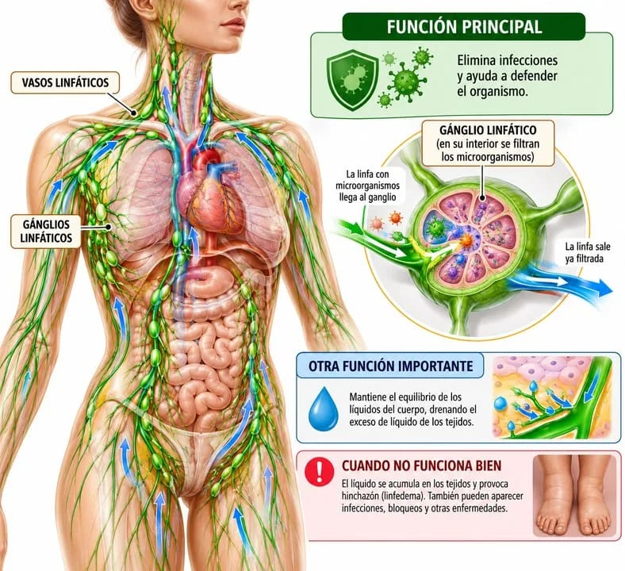
3 litros. El cuerpo humano produce alrededor de 3 litros de linfa al día, que se incorporan poco a poco a la sangre.
La linfa recorre el sistema linfático, que está dotado de una serie de válvulas que impiden el retroceso del fluido.
La linfa se produce a partir del exceso de líquido que sale de los capilares sanguíneos hacia el espacio intersticial o intercelular; ese líquido es recogido por los capilares linfáticos. Estos capilares drenan en vasos linfáticos más gruesos hasta converger en conductos que se vacían en las venas subclavias.
Una de las funciones básicas del sistema linfático es devolver a la circulación sanguínea las proteínas plasmáticas que no son utilizadas por las células de los tejidos.
La linfa se compone de una serie de elementos que, en su conjunto, forman la llamada "carga linfática", y que no son otra cosa que todas aquellas sustancias o elementos que van a salir del medio intersticial no por vía sanguínea, sino por vía linfática.
PROTEÍNAS: procedentes del plasma sanguíneo (torrente circulatorio). La linfa posee una concentración de proteínas del 3 al 4 %. Gracias a la vía linfática, las proteínas plasmáticas que han llegado al espacio intersticial y no han sido utilizadas por las células de los tejidos pueden volver al torrente sanguíneo.
De ahí que los edemas (retención de líquido en el espacio intersticial) cuya causa sea un mal drenaje de la vía linfática (edemas o linfedemas) se definan como hiperproteicos (ricos en proteínas) y den lugar a una serie de complicaciones que no ocurren en los edemas que tienen otras causas (edemas linfodinámicos) y que son hipoproteicos (pobres en proteínas).
MASA LÍQUIDA: compuesta de agua y electrolitos, que no ha sido reabsorbida por la parte venosa terminal de los capilares sanguíneos. En condiciones normales, aproximadamente un 10 % del líquido que filtra en la parte inicial de los capilares sanguíneos sale del espacio intersticial de los tejidos por vía linfática.
GRASAS: son importantes en la circulación linfática intersticial. Ya hemos mencionado anteriormente los quilomicrones (ácidos grasos de cadena larga envueltos por una cubierta proteica), que proceden de la digestión y absorción intestinal de las grasas.
CÉLULAS: presentes también en el torrente sanguíneo, como linfocitos (sobre todo), algunos glóbulos rojos, granulocitos, monocitos, etc.
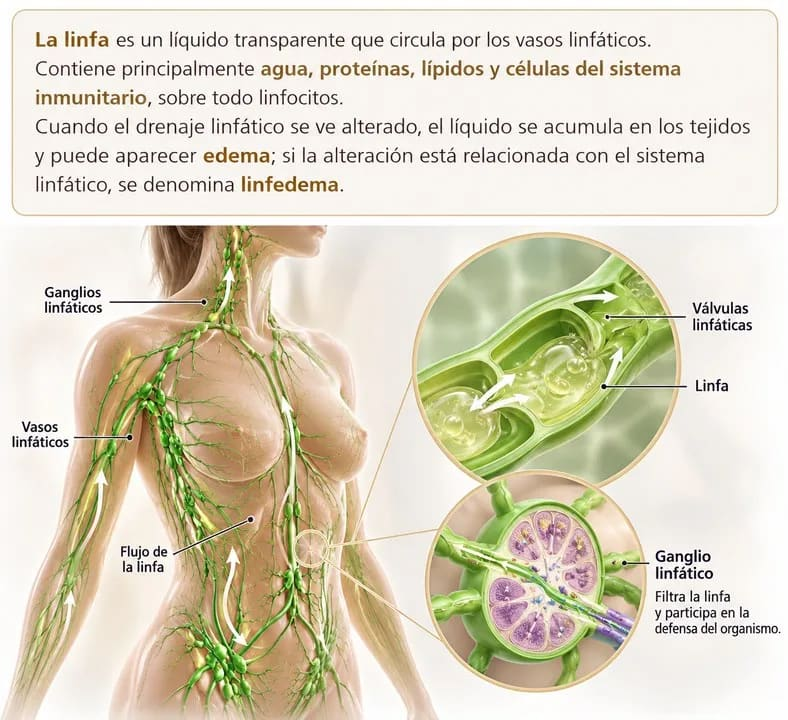
Todos estos componentes se encontraban previamente en los tejidos, formando parte del líquido intersticial (el que existe entre las células) y constituyendo la prelinfa, que recibirá el nombre de linfa cuando penetre en el interior de los vasos linfáticos.
La linfa realiza tres funciones principales:
La linfa es, por tanto, imprescindible para la asimilación de las grasas procedentes de los alimentos.
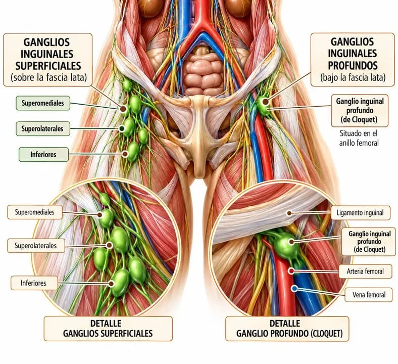
Los ganglios linfáticos son estructuras pequeñas, suaves y redondas o en forma de frijol. Por lo general, no se pueden ver ni sentir fácilmente. Se localizan en racimos en diversas partes del cuerpo.
Los ganglios linfáticos se encuentran ubicados en lugares como los que recogen las siguientes imágenes.
Están ubicados estratégicamente en todo el cuerpo en puntos vulnerables a la entrada de microorganismos extraños.
A continuación, haremos un breve resumen de estas regiones y sus subdivisiones.
Durante mucho tiempo, se mantuvo la idea de que el encéfalo era la única región del cuerpo humano que no poseía un sistema linfático. Se creía que la microglía era la única responsable del mantenimiento de la inmunidad en esta región. Sin embargo, no se conocía con precisión el método a través del cual estos macrófagos ingresaban al sistema nervioso central (SNC).
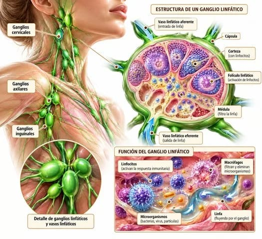
No fue hasta hace unos años cuando Louveau et al. (2015) propusieron que los conductos linfáticos recubren los senos durales situados entre las dos capas de la duramadre y drenan su contenido hacia el grupo profundo de ganglios linfáticos cervicales.
Los ganglios linfáticos del cuello, o cervicales, se dividen en dos grandes grupos. Los ganglios superficiales al músculo esternocleidomastoideo se conocen como ganglios cervicales superficiales, mientras que los situados más profundamente se denominan ganglios cervicales profundos.
Los ganglios cervicales profundos están relacionados con la vena yugular interna. Los ganglios linfáticos cervicales profundos superiores están adyacentes a la porción superior de la vena yugular interna, mientras que los ganglios inferiores se encuentran cerca de la porción inferior de la misma vena.
Los ganglios cervicales superficiales se subdividen en:
Las fosas nasales y la cavidad oral son dos de las principales puertas de entrada de los patógenos al cuerpo humano. Por esta razón, esta región está protegida por un conjunto de tejido linfático conocido como el anillo de Waldeyer.
Este anillo está formado por:
Los ganglios epitrocleares están ubicados en la superficie de la fascia profunda del brazo y medialmente a la vena basílica, en la porción proximal del epicóndilo medial.
En el pasado, los ganglios axilares se dividían en tres grupos basándose en la ubicación relativa al músculo pectoral menor. Los ganglios linfáticos de nivel uno se encontraban por debajo del músculo; los de nivel dos, por detrás del músculo; y los de nivel tres, por encima de dicho músculo.
Actualmente, los ganglios linfáticos axilares se han clasificado en cinco grupos:
Los ganglios linfáticos mediastínicos se dividen en nueve grupos. Entre ellos están los que se encuentran en el hilio de los pulmones y los ganglios linfáticos traqueobronquiales superiores e inferiores. También existen ganglios mediastínicos posteriores y, por último, el timo, que es un órgano linfático primario y se encuentra en el mediastino anterior.
En toda la región abdominopélvica existen varios grupos de ganglios linfáticos asociados a vísceras específicas y adyacentes a las estructuras vasculares principales de esta región.
Los asociados a las estructuras vasculares incluyen los ganglios linfáticos aórticos (superiores e inferiores), ilíacos comunes, ilíacos internos y externos, así como los rectales superiores y medios.
Los ganglios linfáticos inguinales se dividen en superficiales o profundos, basándose en su relación con la fascia lata del muslo. El grupo de ganglios linfáticos superficiales a la fascia lata son los ganglios inguinales superficiales. A su vez, se subdividen en ganglios linfáticos inferiores, superolaterales y superomediales.
Los ganglios profundos a la fascia son los ganglios inguinales profundos. El mayor y más superior de los ganglios profundos es el ganglio inguinal profundo (de Cloquet). Está situado en el anillo femoral.
Y muchos más, que veremos representados en las siguientes imágenes.
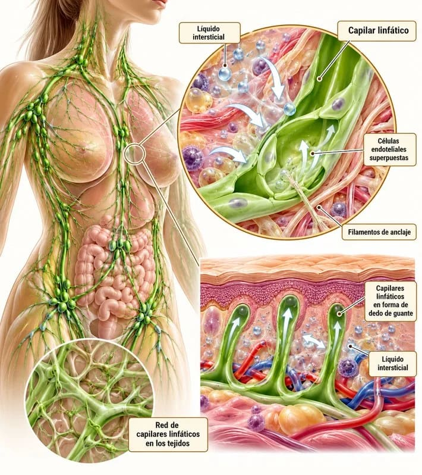
Los vasos linfáticos son estructuras anatómicas que forman parte del sistema linfático, el cual desempeña funciones cruciales en el mantenimiento del equilibrio interno del organismo y en la defensa contra infecciones y enfermedades.
Los vasos linfáticos colectores poseen válvulas que favorecen el flujo unidireccional de la linfa y evitan su retroceso.
La función principal del ganglio linfático es filtrar la linfa y facilitar la respuesta inmunitaria.
Los linfocitos pueden entrar al ganglio desde la sangre a través de las vénulas de endotelio alto (HEV). Cuando reconocen un antígeno, pueden activarse y proliferar para desarrollar una respuesta inmunitaria. Las células activadas pueden salir del ganglio a través de los vasos linfáticos eferentes.
Los ganglios linfáticos contienen numerosas células del sistema inmunitario que ayudan al cuerpo a combatir las infecciones, pero también son lugares donde estas células se pueden producir. Además, filtran la linfa y participan en la identificación y respuesta frente a microorganismos, antígenos y otras partículas extrañas.
Los ganglios linfáticos producen más glóbulos blancos para combatir la infección, lo que provoca que dichos ganglios se inflamen. Los ganglios inflamados a veces se sienten en el cuello, bajo los brazos y en la ingle.
Los vasos linfáticos desempeñan una función crucial en la prevención de la inflamación y en la respuesta inmunitaria del cuerpo. Cuando hay una infección o lesión, los vasos linfáticos se dilatan y aumentan su permeabilidad para permitir el paso de células y sustancias del sistema inmunitario al sitio de la infección o lesión.
Estos vasos se distribuyen por todo el cuerpo, al igual que el sistema circulatorio, y tienen una estructura similar a la de las venas, aunque con algunas diferencias. Los vasos linfáticos son delgados y transparentes, y transportan la linfa, un líquido incoloro que contiene células y sustancias importantes para la respuesta inmunitaria del cuerpo.
Los vasos linfáticos se originan en los tejidos y órganos del cuerpo, donde recogen la linfa que se filtra desde los capilares sanguíneos. Estos vasos se unen entre sí para formar conductos linfáticos mayores, que finalmente desembocan en los ganglios linfáticos.
Los ganglios linfáticos son estructuras especializadas que filtran la linfa y eliminan microorganismos y células cancerosas. Esto ayuda a combatir la infección y a reparar el tejido dañado.
Los vasos linfáticos son estructuras del sistema linfático encargadas del transporte de la linfa y de la respuesta inmunitaria del cuerpo. Estas estructuras desempeñan una función importante en la prevención de la inflamación y en la eliminación de microorganismos y células dañinas.
Son los vasos conductores más pequeños del sistema linfático. Los capilares linfáticos se inician en los tejidos en forma de "dedo de guante"; son tubos de pared delgada formados por una capa simple de células endoteliales superpuestas, unidas por filamentos sujetos al tejido conectivo circundante.
La existencia de estos filamentos permite que, al aumentar la cantidad de líquido en el espacio intersticial, los capilares linfáticos no se aplasten ni colapsen. En cambio, una parte de los bordes celulares cede y permite la entrada de líquido en el interior de los capilares linfáticos, mientras que los bordes sujetos por los filamentos se mantienen firmes.
Recorrido por los órganos que jalonan el trayecto de los vasos linfáticos, por las tres funciones del sistema linfático y por su relación con el sistema inmunitario. El apartado cierra con la definición del drenaje linfático manual, que es la puerta de entrada a la parte práctica de la formación.
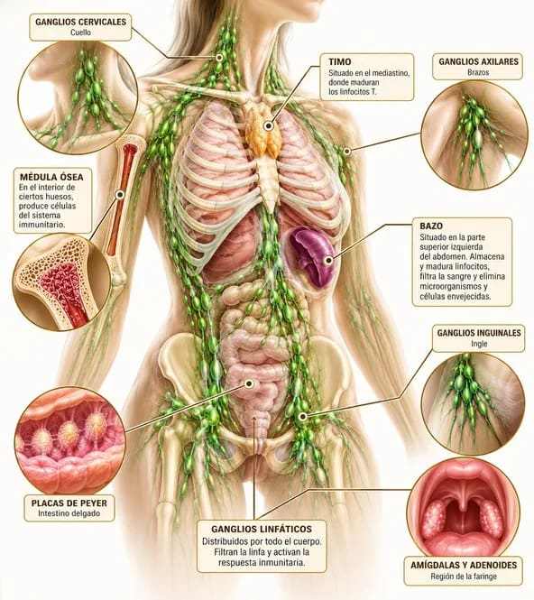
Los órganos linfáticos son aquellos que se encuentran a lo largo del trayecto de los vasos linfáticos. Presentan diferentes tamaños, estructuras y funciones, y pueden estimularse cuando hay una infección o cuando se inflaman. Los principales órganos linfáticos son:
Además, existen las amígdalas y los adenoides, que son considerados nódulos linfáticos situados en la región posterior de la lengua, la faringe y la boca. También podemos hacer referencia a las placas de Peyer, situadas en el intestino. Estos nódulos linfáticos son responsables de producir células del sistema inmune y de ayudar a protegernos contra microorganismos.
La función del sistema linfático consiste en transportar el líquido de los tejidos que rodea a las células hacia la sangre, ya que las moléculas grandes no pueden atravesar la pared del vaso sanguíneo. También se encarga de recoger las moléculas de grasa absorbidas en los capilares linfáticos del intestino delgado. Este proceso es conocido como drenaje linfático.
En resumen, podemos decir que el sistema linfático cumple tres funciones principales:
Claramente, el sistema linfático tiene una función circulatoria y protectora. Hace circular la linfa para complementar al sistema circulatorio y, a la vez, revisa constantemente el ingreso de sustancias y microorganismos para detener a los patógenos.
Como ves, la función del sistema linfático es vital. Si no existiese, el sistema circulatorio no podría funcionar como lo hace, acumularíamos líquido en los tejidos y seríamos mucho más propensos a las infecciones.
El sistema linfático elimina infecciones y mantiene el equilibrio de los líquidos del cuerpo. Si no funciona de manera adecuada, el líquido se acumula en los tejidos y causa una hinchazón llamada linfedema. Otros problemas del sistema linfático pueden incluir infecciones, bloqueos y otras enfermedades.
La sangre circula por las arterias; al llegar a los capilares arteriales, sale al espacio intersticial líquido, oxígeno y nutrientes que alimentan a las células. En los capilares venosos se reabsorbe gran parte del líquido y restos del metabolismo celular.
El líquido restante es reabsorbido por los capilares linfáticos, que lo dirigen hacia los vasos linfáticos, los cuales desembocan en las venas a la altura del cuello (vena subclavia).
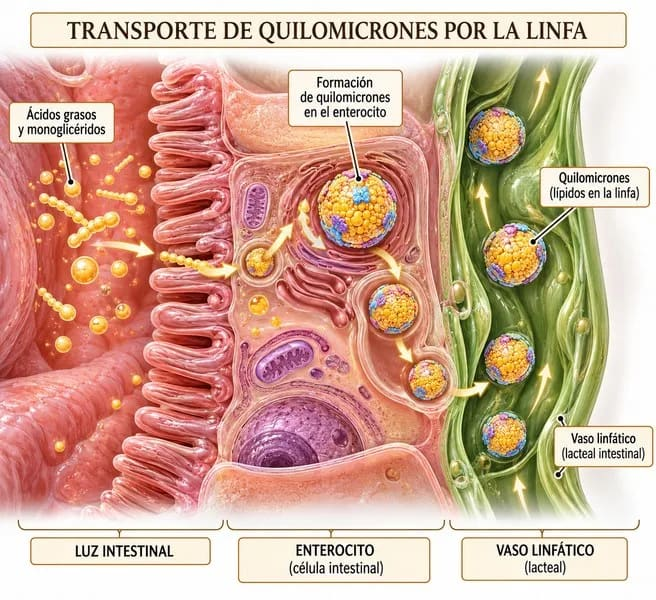
El sistema inmunitario protege el cuerpo del flujo de invasores externos tales como bacterias, virus, hongos y toxinas (sustancias químicas producidas por los microbios). Está constituido por diferentes órganos, células y proteínas que trabajan conjuntamente.
El sistema inmunitario consta de dos partes principales: el sistema inmunitario innato, con el que se nace, y el sistema inmunitario adaptativo, que se adquiere cuando el cuerpo está expuesto a microbios o a las sustancias químicas que liberan los microbios. Estos dos sistemas inmunitarios trabajan conjuntamente.
El sistema inmunitario innato es heredado y se encuentra activo desde el momento en que se nace. Cuando este sistema reconoce a un invasor, entra en acción inmediatamente. Las células de este sistema inmunitario rodean y encierran al invasor. Luego, el invasor es eliminado dentro de las células del sistema inmunitario. Estas células se llaman fagocitos.
El sistema inmunitario adaptativo, con la ayuda del sistema inmunitario innato, produce anticuerpos para proteger al cuerpo de invasores específicos. Estos anticuerpos son desarrollados por las células llamadas linfocitos B después de que el cuerpo ha estado expuesto al invasor.
Los anticuerpos permanecen en el cuerpo y pueden tardar varios días en desarrollarse, pero después de la primera exposición el sistema inmunitario reconocerá al invasor y defenderá al cuerpo contra él.
El sistema inmunitario adquirido va cambiando a lo largo de la vida. Las vacunas entrenan al sistema inmunitario para que produzca anticuerpos que lo protejan de enfermedades perjudiciales.
El drenaje linfático manual es una técnica de masoterapia que consiste en depurar y eliminar del organismo las toxinas y sustancias de desecho del sistema linfático. La función de esta técnica es mejorar la contracción automática de los vasos linfáticos, ayudando a eliminar edemas y otras alteraciones derivadas de una mala circulación de la linfa.
La finalidad principal del drenaje linfático es eliminar líquidos, mejorar el aspecto de la piel y estimular el sistema linfático. Este procedimiento suele utilizarse como tratamiento para problemas de retención de líquidos, estética y edemas, pero también ha cobrado mucha importancia en problemas del sistema inmunológico.
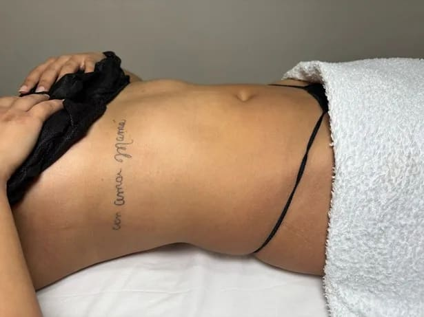
Además de transportar las sustancias de desecho de las células, el sistema linfático también actúa como defensa del organismo; esto se debe a los ganglios linfáticos, unas estructuras que se sitúan en varias zonas del sistema y que actúan depurando los agentes patógenos y neutralizando los daños que puedan producir.
El sistema linfático se encarga de transportar los desechos derivados de la nutrición de las células hasta la sangre, que posteriormente los lleva hasta el sistema excretor para eliminarlos.
Los edemas aparecen cuando el sistema linfático no puede depurar ciertas zonas, por lo que los líquidos y sustancias se estancan. La presión que se aplica durante el drenaje linfático ayuda a arrastrar los líquidos retenidos hacia el sistema circulatorio y la sangre.
La acumulación de líquidos en los tejidos puede deberse a varias causas, como un mal funcionamiento del propio sistema linfático, ya sea natural o inducido (este último, normalmente debido a la extirpación de ganglios linfáticos, algo frecuente en el tratamiento quirúrgico de ciertos tumores).
Los líquidos también pueden acumularse por razones no relacionadas con la linfa, entre otras:
El matrimonio Vodder se dedicó en cuerpo y alma a profundizar en las posibilidades del nuevo tipo de masaje que habían desarrollado, dando lugar a lo que hoy conocemos como drenaje linfático manual (DLM). Observaron cómo muchos trastornos de tipo médico y del campo de la estética, como las hinchazones y sus consecuencias, mejoraban de forma notable con la práctica del DLM.
Se presentó en París por primera vez el drenaje linfático manual (DLM), concretamente en un congreso sobre belleza, "Santé et beauté".
El Dr. Vodder, seguidor de la medicina humoral en su sentido más clásico, inicialmente le atribuyó a la linfa un papel nutritivo y regenerador de los tejidos del cuerpo, lo cual no se ajusta a la realidad, ya que la linfa es un líquido que transporta residuos y proteínas plasmáticas del medio intersticial, pero no tiene funciones nutritivas.
No obstante, al activar la salida de linfa y de líquido intersticial encharcado mediante el DLM, sí mejora la calidad de los tejidos afectados.
No porque los nutra mejor, sino, ante todo, porque los limpia mejor.
Estas inexactitudes por parte de Vodder y el hecho de no ser médico fueron motivos de prejuicios en gran parte de la clase médica durante muchos años, a pesar de demostrarse el DLM como un excelente método en la práctica.
En un principio, solo un grupo, si bien cada vez mayor, de masajistas y esteticistas siguió las enseñanzas de Vodder, hasta que, no hace muchos años, investigadores médicos como los profesores Földi y Kuhnke en Alemania, Casley-Smith en Australia o Collard en Bélgica, entre otros, comenzaron a interesarse por el sistema linfático vascular y a estudiar los efectos del DLM a un nivel mucho más científico que el desarrollado por Vodder.
El drenaje linfático se utiliza cada vez más en el área de oncología para el tratamiento de edemas traumáticos, linfedemas y complicaciones linfáticas derivadas de una cirugía. También se utiliza muy a menudo con fines estéticos.
Los beneficios que aporta esta técnica son:
Aunque el drenaje linfático tenga numerosos beneficios para el organismo, en algunas circunstancias no es recomendable debido a los efectos que puede producir.
Las principales contraindicaciones se dan en casos de:
Qué le ocurre al organismo cuando se aplica el DLM Divine Sorela Caro, qué tienen en común todas las manipulaciones de la técnica y qué reglas de práctica no se negocian nunca.
Aunque el masaje corporal en general incluye manipulaciones conocidas como técnicas de vaciado, estas también facilitan el drenaje linfático, contribuyendo a una mejor salud.
Las manipulaciones específicas del drenaje linfático manual (DLM) en la Técnica Divine Sorela Caro son particularmente eficaces para reducir y tratar linfedemas, ya que están diseñadas para vaciar el líquido acumulado en los tejidos.
Las manipulaciones empleadas en la Técnica Divine Sorela Caro implican un contacto físico repetitivo, con ritmo y velocidad específicos. Este enfoque genera un notable efecto antiinflamatorio y proporciona un considerable bienestar.
El estímulo continuo y repetido sobre los receptores del tacto contribuye a que el DLM Divine Sorela Caro también ejerza un efecto analgésico, aliviando el dolor en la zona tratada.
El DLM Divine Sorela Caro puede influir sobre ellas, tanto sobre las de tipo estriado (musculatura esquelética) como sobre las de tipo liso (musculatura visceral).
Aunque no se ha demostrado científicamente todavía, existe el convencimiento de que el DLM Divine Sorela Caro mejora la respuesta defensivo-inmunitaria de las zonas tratadas.
Esto se basa tanto en los resultados clínicos obtenidos como en el hecho deductivo de que, al vaciar y resolver estados de encharcamiento con el DLM Divine, evitamos la acumulación de residuos en las zonas afectadas. Esto facilita el acceso de información y respuesta de los elementos protectores inmunológicos.
Por lo tanto, es lógico pensar que los buenos efectos preventivos y terapéuticos conseguidos se deben a una incidencia más o menos acentuada sobre el sistema defensivo-inmunitario del organismo.
Antes de comenzar a describir las particularidades de las diferentes manipulaciones que utilizaremos en la práctica del DLM Divine Sorela Caro, vamos a exponer una serie de características comunes a todas ellas.
Con las manipulaciones de DLM Divine, aunque solo podamos influir más directamente sobre el drenaje de la linfa y del líquido intersticial situados en los tejidos más superficiales del cuerpo, la circulación linfática más profunda también se activa gracias a las intercomunicaciones existentes y al efecto de empuje de la linfa proveniente de la superficie.
Las diversas manipulaciones de DLM Divine Sorela Caro tratan de adaptar al máximo nuestras manos y dedos a la superficie de las diferentes partes del cuerpo, empujando la linfa en su drenaje (recorrido) natural.
Para una práctica correcta del DLM Divine Sorela Caro, resulta imprescindible conocer la ubicación de las diversas divisorias linfáticas que enmarcan y limitan los diferentes cuadrantes linfáticos, así como la ubicación de los ganglios linfáticos regionales superficiales, por donde pasa la linfa hacia vías más profundas de desagüe.
Las presiones tangenciales de empuje de las manipulaciones del DLM Divine Sorela Caro siguen un recorrido circular, elíptico o espiral, según el caso.
Lo primero que llama la atención al principiante al contemplar una sesión de DLM Divine es que no se parece en nada al masaje corporal. Las manipulaciones son concretas, directas y con objetivos claros.
Palpando, estimulando, friccionando, amasando y palmoteando, empujamos desechos, liberando y desbloqueando el sistema. Así llevamos la piel hasta el límite, logrando una estimulación del colágeno y la elastina y, por ende, una reparación y tonificación de este órgano.
Los empujes sobre la piel se realizan básicamente en dirección y sentido de los desagües de las diferentes estaciones linfáticas, que suelen ser hacia donde se encuentran los ganglios linfáticos regionales.
Tengamos en cuenta que, si la superficie de contacto con nuestras manos es lo más amplia posible, no solo empujaremos de manera más eficiente, sino que también evitaremos presiones excesivas o inadecuadas.
En el DLM Divine trabajamos siempre de proximal a distal, ya que, para drenar sin impedimentos, conviene abrir primero los ganglios y estimular el líquido acumulado que hay delante; es decir, abrimos, estimulamos y arrastramos hasta los ganglios y vasos linfáticos más próximos a las zonas de desagüe.
Cuando empieza a acumularse líquido en un tejido, los vasos linfáticos de la zona ya están repletos de linfa, ya que tratan de solucionar el encharcamiento esforzándose al máximo. Por ello, resulta siempre conveniente vaciarlos primero para poder eliminar mejor el líquido acumulado en la zona edematosa.
De todas formas, la verdadera presión solo se ejerce en el sentido en el que la linfa va hacia los ganglios regionales, ya que si se aplicara en otras direcciones, se esparciría la linfa y se dificultaría su drenaje. Por ello, hablamos de presión máxima de empuje y de presión cero, en la que solo hay contacto y nuestra mano no ejerce presión alguna.
Las presiones de las manipulaciones del DLM Divine Sorela Caro suelen adaptarse a las necesidades de cada cliente. De esta forma, conseguimos activar el drenaje de la linfa, permitiéndonos moldear y tonificar el cuerpo.
El paso de una presión a otra se realiza de forma progresiva. Con las presiones de empuje de tipo circular, ejercemos un estiramiento tanto longitudinal como transversal de los vasos linfáticos subyacentes y de los vecinos, lo cual favorece su automatismo y permite que transporten una mayor cantidad de líquido.
Como se ha señalado, la superficie de contacto será siempre la mayor posible. Solo en zonas reducidas del cuerpo, como las muñecas, los dedos, los codos, los ojos, etc., utilizaremos los pulgares para empujar adecuadamente la piel.
La respiración y la maniobra son fundamentales. Las respiraciones deben ser largas.
El colágeno y la elastina se crean a partir del 7.º día.
La linfa circula más lentamente a partir de los 27 años de edad.
Son necesarios 10 minutos para la apertura de ganglios; esta maniobra debe ser lenta.
No hacer más de 1 sesión a la semana, aunque sea en distintas zonas.
Recuerda que siempre debes hacer firmar el consentimiento informado al cliente antes de iniciar el tratamiento. Si la persona está enferma, la decisión depende de la patología: en ese caso deberá presentarte una orden médica.
Si la persona tiene antecedentes de cáncer, está prohibido realizar el tratamiento a menos que hayan pasado 5 años y se cuente con una orden médica.
Cuando el estómago hace ruido, significa que has desbloqueado el sistema en capas profundas y, por ende, el resultado es progresivo y duradero, lo que indica un éxito posterior. Si no escuchas ruido, significa que el tratamiento es superficial.
La frecuencia para tratar el abdomen es, como mínimo, cada 4 días y, como máximo, cada 7 o 10 días, según la problemática. Por favor, valora y personaliza su protocolo. Las piernas se valoran de igual manera.
Si hay gases, significa que la persona come muy rápido y tiene malas digestiones. La Técnica Divine Sorela Caro le ayudará a mejorar notablemente.
El chequeo es fundamental al inicio, ya que nos ayuda a localizar los puntos de mayor bloqueo, y al finalizar, para comprobar que han disminuido o desaparecido.
La persona que no orina puede tener bloqueos intestinales. Es muy importante personalizar el tratamiento, respetando siempre el protocolo Divine Sorela Caro. Debes activar el latido del ombligo para garantizar que estimulaste el sistema.
Si la persona padece problemas cardíacos, no se puede realizar el tratamiento. Por favor, repasa las contraindicaciones descritas en este dossier.
Qué ocurre en el cuerpo durante y después de una sesión de Técnica Divine, por qué el trabajo por zonas la distingue de otros métodos y qué se entiende exactamente por masaje drenante.
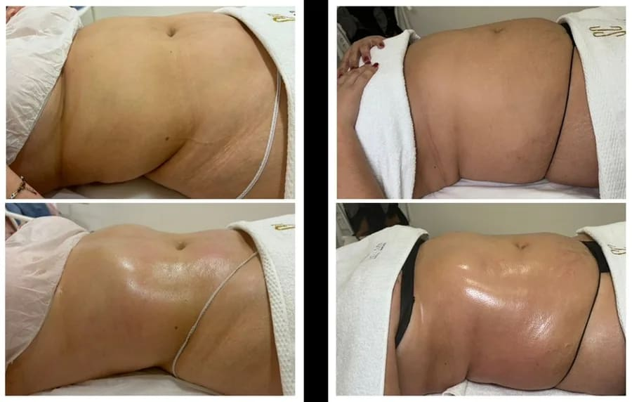
Sorela Caro ha revolucionado el ámbito de los masajes con su Técnica Divine, perfeccionando las metodologías existentes. Esta técnica avanzada ha sido desarrollada integrando prácticas de masaje tradicionales con estudios profundos sobre el sistema linfático.
60 minutos. En una sesión de 60 minutos de masaje con la Técnica Divine, el cuerpo del cliente comenzará a experimentar cambios significativos.
La Técnica Divine de Sorela Caro ofrece resultados que son tanto inmediatos como duraderos. Estos son solo algunos de los desafíos que este innovador método puede abordar, favoreciendo además la eliminación de toxinas:
Gracias a maniobras especializadas que reactivan y estimulan los órganos internos, el cuerpo comienza a liberar las sustancias tóxicas presentes en el sistema linfático, promoviendo la producción de nueva linfa. Esto contribuye a fortalecer el sistema inmunológico y a reactivar otros sistemas importantes, como el metabólico y la microcirculación.
Por esta razón, incluso en los días posteriores al tratamiento, el organismo sigue beneficiándose, purificándose y eliminando las toxinas a través de la orina y las heces. Todo esto conduce a una sensación de bienestar y ligereza, además de la pérdida de peso y la reducción de tallas.
Antes de lanzar la Técnica Divine, que ofrece resultados inmediatos y sorprendentes, Sorela decidió enriquecer su enfoque técnico complementando su formación con estudios en biodescodificación y nutrición. Este conocimiento adicional le permite abordar los bloqueos emocionales de sus clientes, potenciando así los efectos y beneficios de sus tratamientos.
Además de la inmediatez de los resultados en tan solo una sesión de 60 minutos, lo que distingue a la Técnica Divine de Sorela Caro es su enfoque en áreas específicas y bien diferenciadas del cuerpo. Actualmente, la Técnica Divine es una de las más destacadas en su capacidad para tratar zonas individuales durante la sesión.
El drenaje linfático sigue siendo un campo de la ciencia abierto a nuevos descubrimientos y evoluciones. Solo en el último siglo, con los avances tecnológicos, hemos comenzado a entender este sistema, que anteriormente era demasiado sutil e incluso invisible sin instrumentos como el microscopio.
Incluso hoy en día, no recibe mucha atención en el ámbito médico, principalmente porque no representa un interés económico significativo para las compañías farmacéuticas.
Inspirada por el deseo de mejorar el bienestar de sus clientes, Sorela Caro se adentró en este campo mágico y fascinante, lleno de posibilidades por descubrir. Así, desarrolló una técnica de masaje que se concentra en zonas concretas del cuerpo con un ritmo sostenido e incluye maniobras específicas dirigidas al sistema linfático.
Esta aproximación ha permitido a Sorela Caro lograr resultados inmediatos y duraderos. Los efectos de su masaje drenante se hacen más evidentes con el tiempo, especialmente en los días y semanas siguientes al tratamiento.
Además, cada vez más profesionales del ámbito médico recomiendan este tipo de terapia, particularmente para personas que van a someterse a una cirugía o que acaban de pasar por una, es decir, en los períodos preoperatorio y postoperatorio.
La Técnica Divine de Sorela Caro es un ejemplo de masaje drenante diseñado para movilizar los fluidos linfáticos y reducir su acumulación, utilizando diversas técnicas de manipulación que varían según el método y las necesidades del individuo. Además, estas técnicas pueden contribuir a redefinir los adipocitos, así como a aumentar las defensas inmunitarias y el metabolismo.
En general, el término "masaje drenante" se usa para describir diferentes tipos de masajes especializados que se enfocan en mejorar la circulación linfática: estimulan y facilitan el flujo linfático, y promueven la eliminación de acumulaciones de líquidos.
Estos masajes pueden tener dos tipos de aplicaciones:
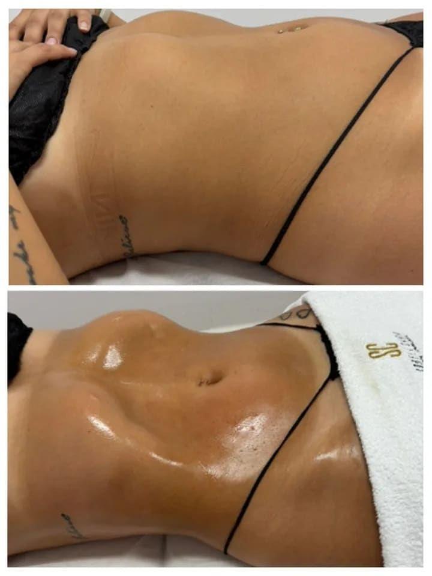
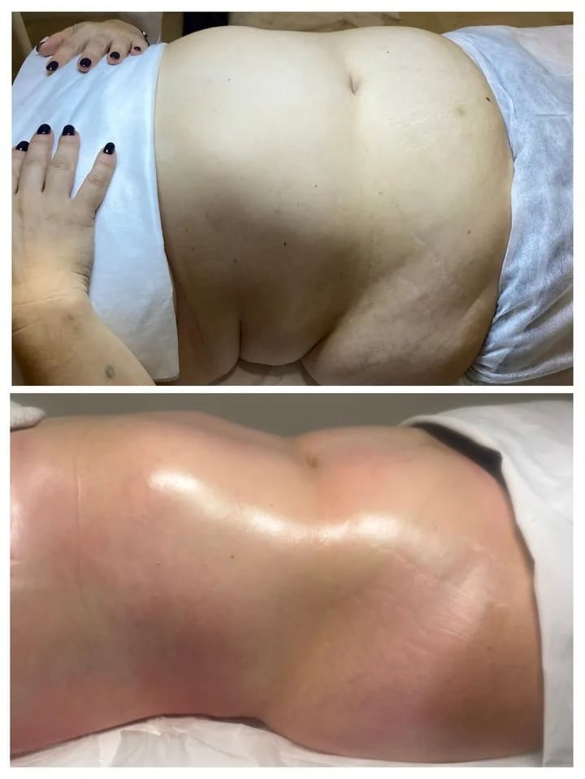
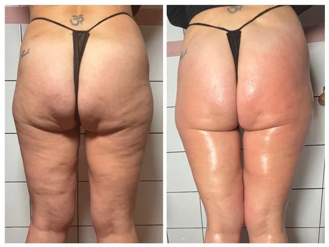
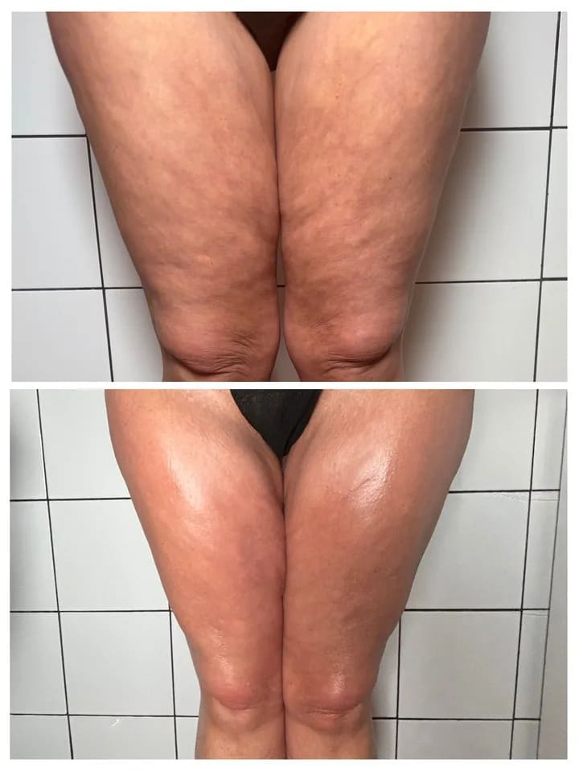
Imágenes cedidas por las clientas. Los resultados varían con cada persona.
Este dossier acompaña a la formación presencial. Lo que no está escrito aquí se trabaja con las manos, sobre el cuerpo, durante los dos días.
Documento confidencial. Su contenido está protegido por el acuerdo de confidencialidad y no divulgación que firma cada alumna antes de la formación: no puede reproducirse, modificarse, hacerse público ni divulgarse a terceros sin autorización escrita y expresa de Sorela Caro.